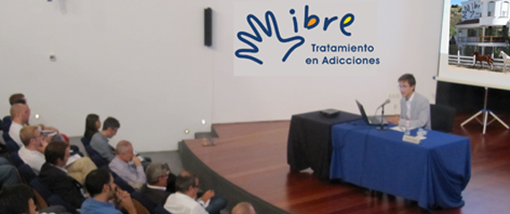

Empresas
Sabemos que...
Una de las preocupaciones en las empresas son las adicciones y sus consecuencias en el ambiente laboral. Por ello contamos con el Programa para Empresas. Si necesita más información, llámenos.

- Ctra. Libre Tijuana-Rosarito Km. 9 y 1/2 #27
Aguaje de la Tuna, Tijuana, BC 22490. - +52 (664) 637.1711
- +1 (619) 694.1002
- contacto@libredeadicciones.com
Tweets Recientes
Quienes Somos
Somos un Centro de rehabilitación y una clinica especializada en el tratamiento de adicciones. Con un modelo de tratamiento integral y un enfoque sistemático y profesional